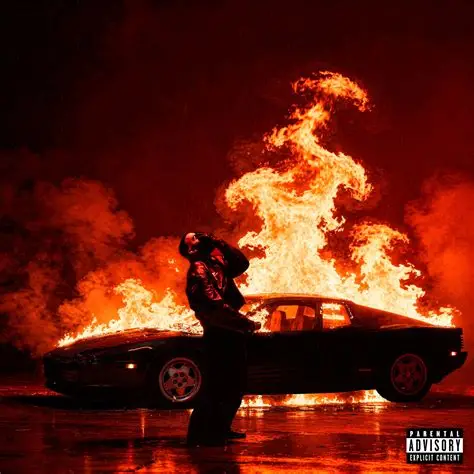
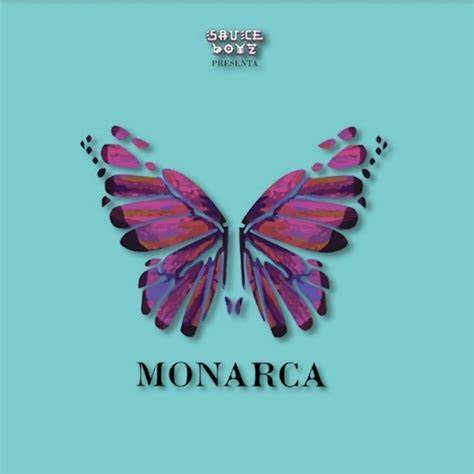

Corsa
Corsa (2026)
Colaboraciones con Top Boy, Cazzu y más. El álbum más reciente.

DON KBRN
DON KBRN (2025)
Una joya producida por DJ Premier. Eladio demuestra su destreza lírica uniendo el trap moderno con la esencia del boom bap neoyorquino.

Porque Puedo
Porque Puedo - EP (2024)
Un proyecto directo y crudo. 5 temas donde Eladio reafirma por qué es el rey del trap en español, destacando su flow en canciones como "Heavyweight".

Sol María
Sol Maria (2024)
Un tributo a su madre. Incluye éxitos como "Bendecido".

3MEN2 KBRN
3MEN2 KBRN(2023)
Considerado uno de sus mejores proyectos de Trap puro.

SEN2 KBRN VOL.2
SEN2 KBRN VOL.2 (2022)
La esencia pura de Eladio. Un proyecto que equilibra el trap agresivo con barras profundas y melódicas. Incluye hits como "Mbappé" y muestra su lado más maduro y personal.

Sauce Boyz 2
Sauce Boyz 2 (2021)
La mega-secuela que consolidó su éxito mundial. 22 canciones que mezclan reggaetón y trap con invitados de lujo como Arcángel, Bizarrap, Duki y Myke Towers.

SEN2 KBRN VOL.1
SEN2 KBRN VOL.1 (2021)
El proyecto más personal de Eladio. Con un enfoque lírico profundo y sin colaboraciones, este álbum define su estilo único "Sentimental pero Cabrón". Incluye el himno "Paz Mental".

Monarca
Monarca (2021)
El álbum que lo llevó a los Latin Grammys. Una mezcla perfecta de trap, reggaetón y ritmos comerciales. Con temas icónicos como "Mala Mía" y colaboraciones con J Balvin y Yandel.

Sauce Boyz Care Package
Sauce Boyz Care Package (2020)
Un regalo para los verdaderos fans. Recopila los mejores singles, colaboraciones y freestyles que marcaron el inicio de su reinado, incluyendo joyas como "Lluvia".

Sauce Boyz
Sauce Boyz (2020)
El álbum debut que cambió las reglas del juego. Una explosión de trap y reggaetón con colaboraciones legendarias. Aquí nació el movimiento "Sauce" que hoy domina el género.

Lista de reproducción.
Esta lista de reproducción es solo para los mas fanáticos de Eladio incluyendo temas antiguos desde SoundCloud hasta la actualidad.
Escuchar↗